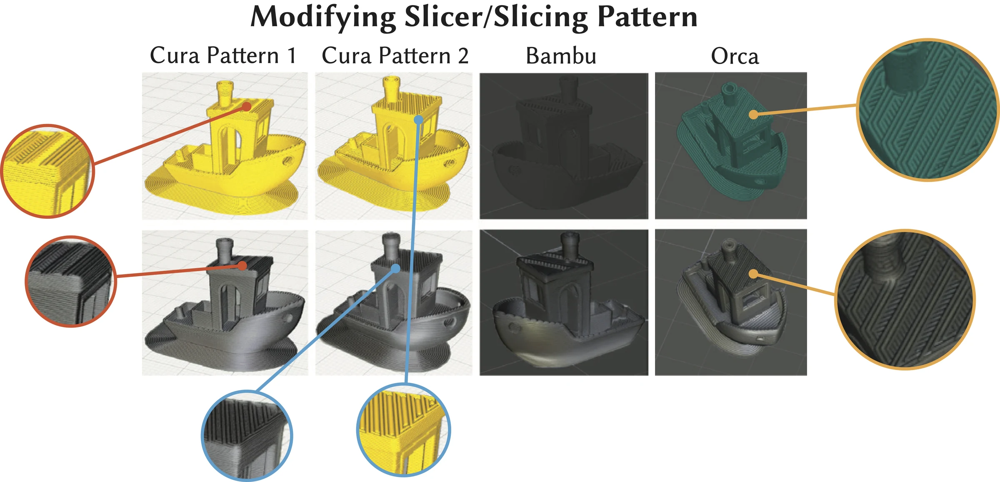

This live walkthrough is new. Please report bugs or issues to max1@mit.edu.
We present VisiPrint, a tool for appearance-first previews of 3D-printed objects. Existing print preview slicers focus on toolpaths rather than appearance, while rendering tools are complex and cannot automatically reproduce slicing patterns. Prior work has shown persistent gaps between digital previews and printed results, including color shifts, gloss and translucency changes, and layer-line highlights. VisiPrint addresses this by combining slicer screenshots with filament photos through a custom diffusion-based synthesis pipeline. We present both a standalone user interface compatible with any slicer and an Ultimaker Cura plugin. We evaluate VisiPrint through a user study showing that it is significantly faster, easier to use, and more faithful than alternatives: within a time limit, participants completed 100% of preview tasks with VisiPrint, compared to 63% with Cura and 13% with Blender. VisiPrint narrows the gap between design intent and printed appearance by complementing settings-centric tools with appearance-driven decision support.

VisiPrint lets users preview how a 3D print is likely to look before fabrication using just two inputs: a screenshot of the sliced model and a photo of the intended filament or printed material sample. The system preserves slicing-dependent appearance cues while transferring material characteristics such as color, translucency, gloss, and texture. It works across slicers and supports both a standalone interface and an Ultimaker Cura plugin, helping users make appearance-driven printing decisions earlier in the workflow.
@inproceedings{PerroniScharf2026VisiPrint,
author = {Maxine Perroni-Scharf and Faraz Faruqi and SooYeon Ahn and Raul Eduardo Hernandez and Szymon Rusinkiewicz and William Freeman and Stefanie Mueller},
title = {VisiPrint: Previewing 3D-Print Appearance from Real Material Samples},
booktitle = {Proceedings of the 2026 CHI Conference on Human Factors in Computing Systems (CHI '26)},
year = {2026},
month = {April 13--17},
address = {Barcelona, Spain},
publisher = {ACM},
doi = {10.1145/3772318.3790851},
isbn = {979-8-4007-2278-3/2026/04}
}